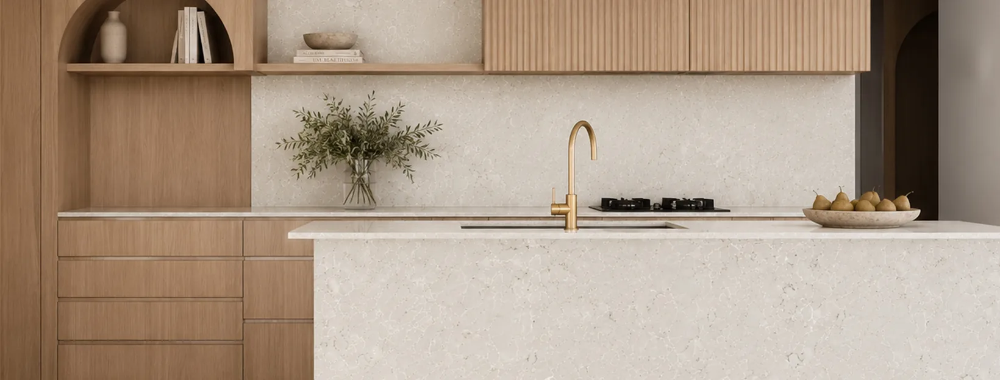

Solid surfaces
19 colours.
Zero silica.
Benchtops, vanities and splashbacks made from natural minerals with no silica. Stain resistant, repairable and seamless, with a 10 year product warranty. Four colours are UV-stable for outdoor kitchens.


Colours shown are a representation only and may vary from the actual product. Please see a physical sample before making your final selection.

Why solid surface
What you are actually getting.
Zero silica
Made from natural minerals with no silica content. A safer material for the people who cut, install and live with it.
Stain resistant
A non-porous, hygienic surface that resists dirt and stains. Simple cleaning keeps it looking new, without harsh chemicals.
Repairable
Accidental damage can be restored to original condition. You fix the spot, not the whole benchtop.
Seamless
Pieces join into one unbroken surface for large islands. Colour and texture run through the entire thickness.
10 year warranty
Every colour carries a 10 year product warranty. Full details are in the product documentation.
Made in Australia
Manufactured locally by Craftmark, which means faster supply and someone to call when you need help.
Outdoor range
Holds its colour in the sun.
Most surfaces fade and chalk outdoors. These 4 colours are UV resistant, so an outdoor kitchen or alfresco bar keeps its colour for years.
Show outdoor coloursSee it where it will live.
Order a sample and look at it in your own light, morning and evening, beside your cabinetry. Then decide.